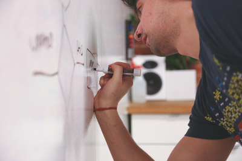

MSc Students
Current students
- Diogo Patrício, Eye-Tracking Analysis Framework
Co-supervision with Prof. Miguel Goulão
- Raquel Ferreira, On the quality of deriving conceptual models from use cases and user stories
Co-supervision with Prof. João Araújo
- Rúben Rebelo, Promoting software developers' productivity in the context of a pandemic
Co-supervision with Prof. Miguel Goulão
- Inês Ribeiro, Mapping gender bias in software development
Co-supervision with Prof. Miguel Goulão
- Beatriz Caetano, Estudo da comunidade MATLAB com base em Grounded Theory
Co-supervision with Prof. Miguel Monteiro
- Ana Cristão, O "Novo Normal" no desenvolvimento de software
Co-supervision with Prof. Miguel Goulão
- Daniela Cordeiro, Bias in software development communities
Co-supervision with Prof. Miguel Goulão
Former students
- Eduardo Reis, Surveying communities of users of MATLAB and clones (2021)
Co-supervision with Prof. Miguel Monteiro
- Catarina Matos, Promoção da inclusão no desenvolvimento de software (2021)
Co-supervision with Prof. Miguel Goulão
- Rita Pereira, Quality evaluation of user stories (2020)
Co-supervision with Prof. Miguel Goulão and Prof. João Araújo
- Mafalda Santos, Cognitive effectiveness evaluation of goal-oriented requirements models (2017)
Co-supervision with Prof. Miguel Goulão and Prof. João Araújo
Teaching History

Software Developement Methods
Métodos de Desenvolvimento de Software (MDS)
Lab classes
Fall 2017/2018 to 2019/2020
Departamento de Informática
Faculdade de Ciências e Tecnologia
Universidade Nova de Lisboa
Object-Oriented Programming
Programação Orientada pelos Objetos (POO)
Lab classes
Spring 2018/2019
Departamento de Informática
Faculdade de Ciências e Tecnologia
Universidade Nova de Lisboa
Object-Oriented Programming B
Programação Orientada pelos Objetos B (POO B)
Lab classes
Spring 2017/2018
Departamento de Informática
Faculdade de Ciências e Tecnologia
Universidade Nova de Lisboa

Introduction to Programming
Introdução à Programação (IP)
Lab classes
Fall 2016/2017
Departamento de Informática
Faculdade de Ciências e Tecnologia
Universidade Nova de Lisboa

Soft Skills for Science and Technology
Competências Transversais para Ciências e Tecnologia (CTCT)
Lectures and lab classes
Between semesters 2013/2014 to 2020/2021
Faculdade de Ciências e Tecnologia
Universidade Nova de Lisboa

Informatics for Science and Engineering
Informática para Ciências e Engenharia (ICE)
Lab classes
Spring 2013/2014 to 2015/2016
Fall 2015/2016
Departamento de Informática
Faculdade de Ciências e Tecnologia
Universidade Nova de Lisboa

Applications Development for Web
Desenvolvimento de Aplicações para a Web (DAWeb)
Lab classes
Fall 2014/2015
Departamento de Informática
Faculdade de Ciências e Tecnologia
Universidade Nova de Lisboa